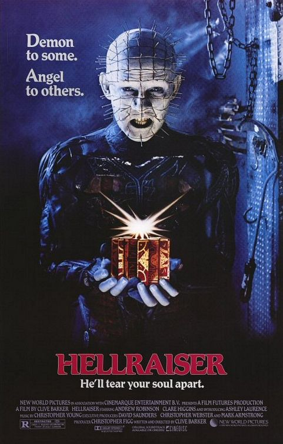
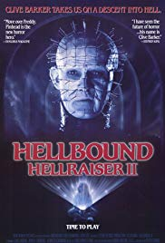
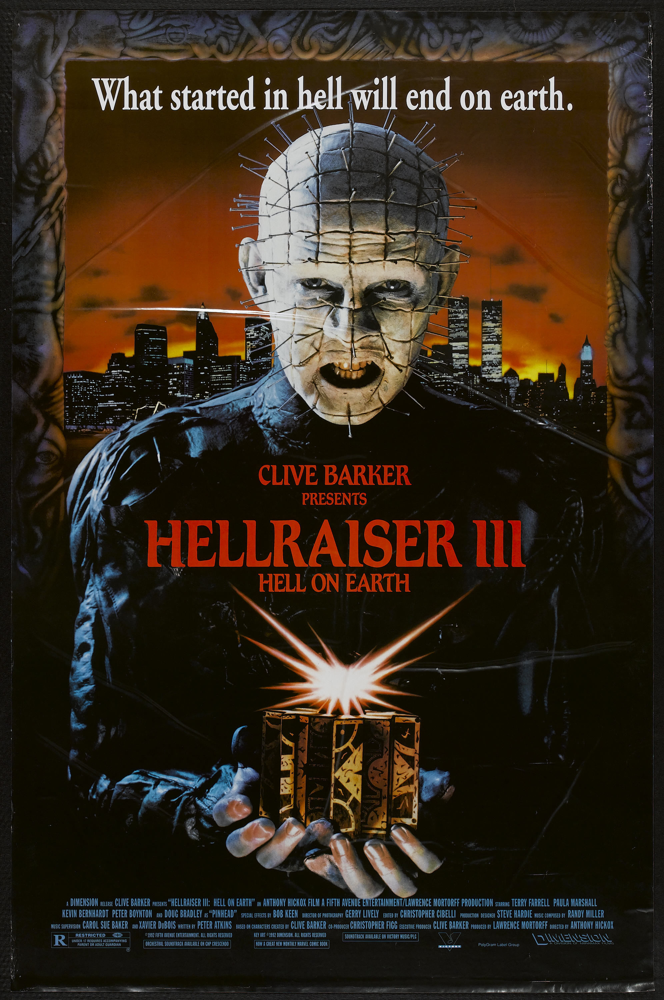

Hellraiser is a 1987 British horror film written and directed by Clive Barker, and produced by Christopher Figg, based on Barker's novella The Hellbound Heart. The film marked Barker's directorial debut. The film involves the resurrection of Frank (Sean Chapman), who had opened the door to an alternate dimension and had his body torn to pieces by creatures known as Cenobites. Years later, Frank's brother Larry (Andrew Robinson) moves into their late mother's abandoned house with new wife Julia (Clare Higgins). An accident causes some of Larry's blood to spill on the attic floor, which triggers Frank's resurrection. To complete his resurrection, he requires more blood which Julia provides while Kirsty Cotton (Ashley Laurence), Larry's daughter, discovers Frank's puzzlebox which leads her to meet with the Cenobites.
In 1988, a sequel titled Hellbound: Hellraiser II follows Dr. Philip Channard (Kenneth Cranham) as he resurrects Julia, who was stuck in Hell with the Cenobites. Kirsty is pulled back into the Cenobite world, where the demons decide to keep her, but, having discovered the human identity of the Cenobites early, Kirsty appeals to their latent humanity, specifically the Cenobite leader Pinhead (Doug Bradley). Pinhead decides to release her, but he and his followers are killed by Channard, who has become a Cenobite himself. With help of a teenage girl, Tiffany (Imogen Boorman), who unknowingly assisted Channard in opening the box, Kirsty and Tiffany escape the Cenobite world and close the gateway behind them.
In Hellraiser III: Hell on Earth (1992), the revelation of Pinhead's humanity has resulted in a schism, splitting him in two—his human self, World War I veteran Elliot Spencer, and Pinhead, now a living embodiment of Spencer's id. While Spencer is trapped in limbo, Pinhead is trapped, along with the puzzle box, in the surface of an intricately carved pillar, a relic of the Cenobite realm. The pillar is found by a night club owner, J.P. Monroe (Kevin Bernhardt), who begins assisting Pinhead in his resurrection. A television reporter, Joey Summerskill (Terry Farrell), begins to learn about Pinhead and the puzzle box, which leads her to Monroe's night club. Pinhead is eventually resurrected, and begins creating new Cenobite followers in an effort to establish Hell on Earth. Joey manages to reunite Spencer and Pinhead, fusing them back into one entity, and is able to use the puzzle box to send Pinhead back to his dimension. Afterward, Joey submerges the box into freshly laid cement at a construction site.